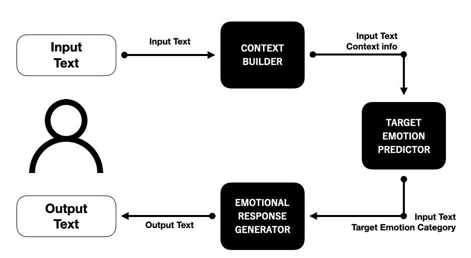
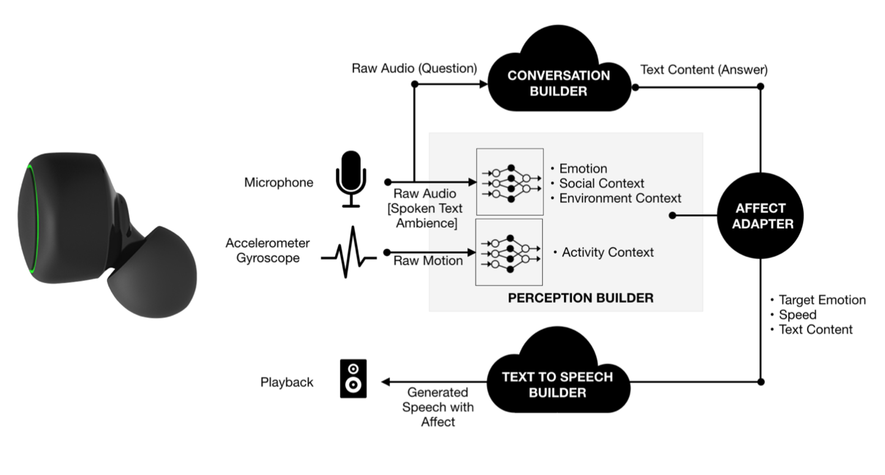
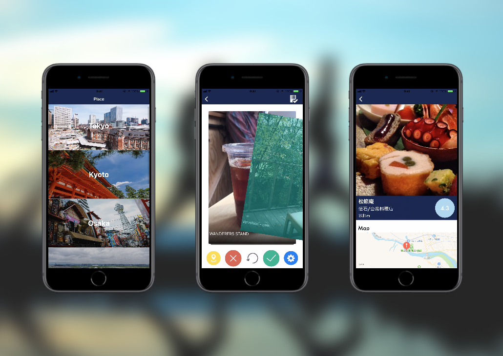

Emotional Chatbot

Chatbots, which have become popular in recent years, can be applied to cognitive behavioral therapies such as mental health care and therapy, and are expected to play a role as a digital partner that is close to humans in the future.
In this research, we focus on the emotional factors necessary for humans and dialogue systems to form social relationships, and implement a dialogue system that extracts semantic information and emotional elements from human speech, applies appropriate emotions to the situation, and uses them to generate responses.
Context-aware agent

Conversational agents are increasingly becoming digital partners of our everyday computing experiences offering a variety of purposeful information and utility services. Although rich on competency, these agents are entirely oblivious to their users' situational and emotional context today and incapable of adjusting their interaction style and tone contextually. To this end, we present a first-of-its-kind situation-aware conversational agent on kinetic earable that dynamically adjusts its conversation style, tone, volume in response to users emotional, environmental, social and activity context gathered through speech prosody, ambient sound and motion signatures.
Presentation: MobiSys 2019 DEMOSi, ACII2019
Matsuyoi

In this research, we propose a system that allows one to find a hidden spot that is scenic, yet unpopulated, with the intention of improving the satisfaction of one's trip. These hidden spots are not yet noted in the existing tourism services, however can provide a new place for the tourists to discover. We developed an application as a prototype to analyze and pinpoint hidden spots by using venue data from Foursquare. We acquired 19,705 data around Tokyo and calculated the relative hiding spot degree. Thus, we made it possible to provide users with hidden spot information from smartphone application.
Presentation: UBICOMP/ISWC 2018 DEMOS, 第53回UBI研究会
NostalGear
We record a memory by the shape that a picture, an movie and sentences are various. But the much is put back in the inside of a chest and isn't utilized, and a memory is forgot. So we propose the next generation album to which memory remembrance is suggested aggressively "NostalGear".
Presentation: SFC Open Research Forum 2016
NostalGear